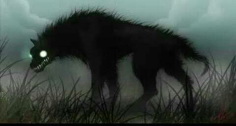
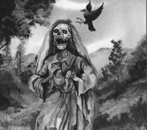
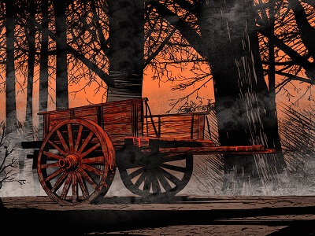
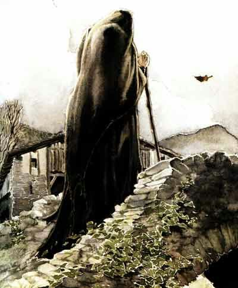
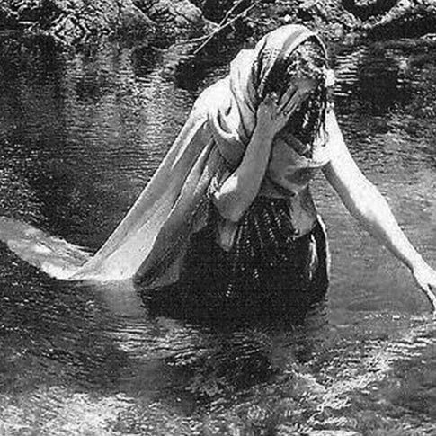
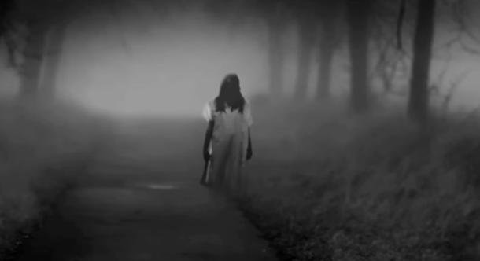
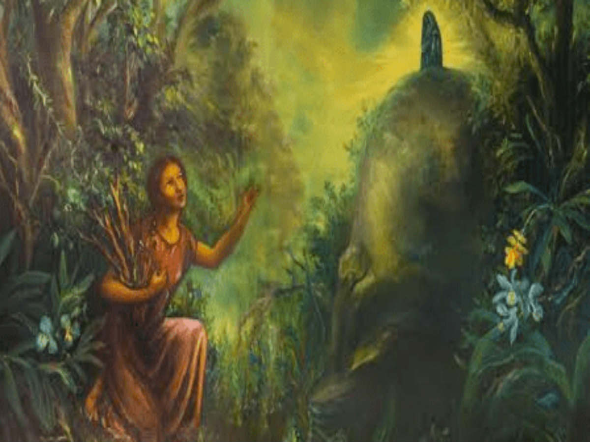
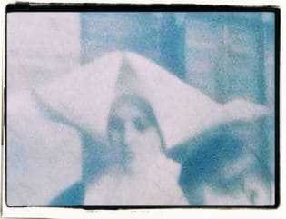
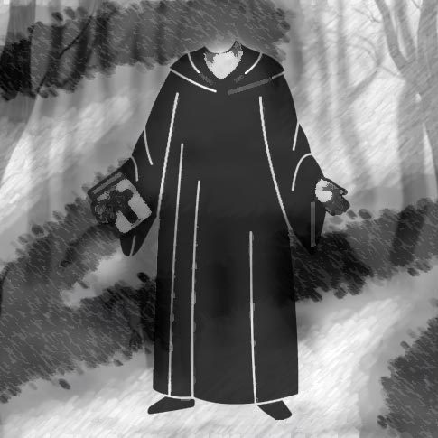
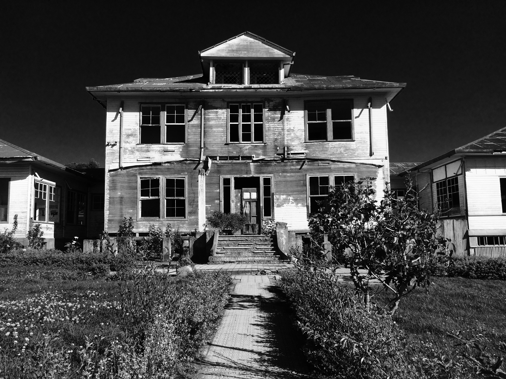

- Leyendas de la Magia
- El Cadejos
- La Cegua
- La Carreta sin Bueyes
- La Bruja Zárate, y la Piedra de Aserrí
- La Tulevieja
- El dueño del Monte
- La Llorona
- Leyendas de la Religión
- La Leyenda de la Aparición de la Virgen de los Ángeles
- La Monja del Vaso
- El padre sin cabeza
- Leyendas de la Tierra
- El Sanatorio Duran
Indice
| Recomendaciones para el Lector | |
|---|---|
| Si te encuentras con un estado de animo aburrido te hacemos las siguientes recomendaciones |
La Bruja Zárate, y la Piedra de Aserrí La Llorona La Cegua |
| Si estas con un estado de ánimo enojado tal vez esta historia sea para ti |
La Monja del Vaso El padre sin cabeza |
| Si estas con un estado de animo curioso te hacemos esta recomendación |
El Sanatorio Duran La Leyenda de la Aparición de la Virgen de los Ángeles |
El Cadejos

Esta tradición habla de un espectro con forma de perro negro grande y encadenado, a
menudo con dientes de jaguar y patas de cabra, que se aparece por los caminos a deshora
para acompañar a los noctámbulos que andan en malos pasos y advertirles para que
cambien su forma de ser.
La historia de origen varía: la más común es la de un hijo menor que vivía en un total
libertinaje, y sufrió la maldición de su padre; o bien, un sacerdote corrupto que fue
castigado por Dios. Otra versión narra que se trataba de un joven hijo de un alcohólico,
el cual recibía, junto a su madre, el maltrato por parte de su padre, y que, intentando
corregir los malos pasos de este, se disfrazó de un animal negro y peludo, saliéndole al
paso una noche en que el hombre venía totalmente ebrio. Tras el susto, este se dio cuenta
de que era su hijo, por lo que, maldiciéndolo, lo condenó a vagar en forma de perro
espectral que sigue, pero no daña, a los bebedores que trasnochan. En una versión, tras
cien años de penar, el Cadejos se transformó nuevamente en un ser humano, y posteriormente
se arrojó al cráter del volcán Poás, a pesar de lo cual, no murió, y es él quien provoca
los estremecimientos del coloso. Esta asociación de los perros mágicos con los volcanes
es frecuente en el folclor centroamericano.
La leyenda del Cadejos tiene su origen en los mitos aborígenes sobre chamanes y nahuales
que pueden tomar la forma de animales para ejercer sus funciones religiosas y funerarias,
rituales en lo que se utilizaban ornamentos de jade, pieles de animales, plumas de aves y
máscaras. Entre los mesoamericanos, el perro ejercía la función de compañero de los
muertos en su viaje al más allá. La palabra cadejo, no obstante, es de origen español,
y se usa para denominar a una parte del cabello cuando está muy enredada, por lo que, en
cierta forma, define propiamente al fantasma al ser este una criatura de pelo enmarañado.
La Cegua
La Cegua (en algunos textos aparece como Segua) es un fantasma femenino que se posa enfrente de varones que transitan por caminos desolados a altas horas de la noche. Ellos afirman de que se trata de una mujer hermosísima. Antiguamente se decía que este ente prefería asustar a aquellos sujetos que viajaban en caballo. Por obvias razones, en la actualidad debido al cambio de los medios de transporte, se dice que la Cegua también detiene a los automovilistas. En el momento en el que el chofer admite llevarla a donde ella le indica, su precioso rostro se transforma en algo horripilante. La piel de sus mejillas se comienza a desprender y de sus ojos sale un brillante fuego. Además, su aliento se torna pestilente, ya que es exactamente el mismo aroma de los cuerpos en descomposición. Las víctimas pueden perecer de dos maneras distintas. La primera de ellas es al besarla, ya que con ello el espectro transmite a la muerte a la otra persona. Mientras tanto, el segundo modo de fallecer a manos de la Cegua es de un ataque al corazón causado por la horrible impresión al mirar su cadavérica cara. El origen de este personaje se remonta a otra historia que nos dice que hace muchos años había una joven quien golpeó brutalmente a su madre, dado a que esta no la dejó asistir a una tertulia. Después de eso, la progenitora de la chica le lanzó una maldición y así fue como se transformó en un espíritu.
Video InformativoLa Carreta sin Bueyes

Tradicionalmente se asocia con la avaricia y la codicia. La leyenda cuenta que, a
deshoras o en pleno día, se oye a una carreta pasar cerca de la vivienda de alguna
persona que se está volviendo muy avara, o de un avaro que acaba de morir, advirtiendo
que cambien su pensar. Se caracteriza porque, de repente, se oye en algún lugar, luego
en otro, ora en uno diferente, ahora en un lugar más apartado, pero en base a un punto
de 'órbita', el lugar del avaro. Es un espectro con el don de la ubicuidad, entonces.
Se dice que aparece como una carreta (la costarricense está pintada de múltiples
colores) que tiene la yunta (en donde se enganchan los bueyes) alta y vacía. A veces
se menciona que quien la ve muere a los ocho días de contemplar la aparición.
Sobre el origen de tal fantasma se narra lo siguiente: un labrador codicioso y avaro
decidió construir una carreta, pero para no comprar la madera necesaria robó la que
estaba consagrada para construir el templo del lugar. Al terminar la carreta, enganchó
los bueyes y se subió al vehículo para guiarlos, pero los animales se desengancharon y
él cayó muerto. Desde ese día, guía la carreta sin necesidad de tracción animal (una
versión de la leyenda escribe "¿Por qué condenar a unos inocentes bueyes?") y va como
advertencia por los caminos y yermos, para aquellos que solamente conocen la palabra
riqueza. Los que no hacen caso de su errar, al morir van y se unen al espectral boyero
para conducir la carreta maldita por sendas inciertas.
Otra versión, recogida por Elías Zeledón en su Leyendas costarricenses, indica que el
hombre de la carreta era el amante de una bruja, y que al morir pidió que fuera enterrado
como cristiano. La bruja intentó entrar con todo y carreta al templo, pero el sacerdote
la reprendió por su incredulidad, y desde entonces la carreta va anunciando desgracias,
conducida sin bueyes por el Diablo.
La Bruja Zárate, y la Piedra de Aserrí

La bruja Zárate es la bruja más famosa del folclor costarricense. Es descrita como una
mujer blanca o indígena, fea, gorda, pequeña, de ojos negros y grandes, mirada fiera y
maliciosa. Usaba el pelo recogido en dos trenzas y vestía humildemente con una camisa
blanca sin gola de cuello alto, enaguas negras, un pañuelo negro atado al cuello y un
rebocillo de paño negro que usaba para taparse de la lluvia. Siempre iba descalza. De
carácter voluble, conversaba de forma estridente y reía a carcajadas. Amiga del
tabaco, acostumbraba a fumar y recibía con gusto ofrendas de tabaco que le daban los
campesinos.
Vivía en una cueva en la piedra de Aserrí, un promontorio rocoso que se asoma en los
cerros de Bustamante, en el cantón de Aserrí, al sur de San José, pero tenía otros
encantos donde solía residir o guardar tesoros: la Piedra Blanca de San Miguel de
Escazú; el cerro del Tablazo o de la Vieja, en Acosta, y el cerro del Espíritu Santo,
en Naranjo. Poseía gran cantidad de poderes: podía transmutar vegetales en oro,
transformar a las personas en animales, curar a los enfermos, lanzar maleficios o el
mal de ojo, hablar con los muertos, desaparecer y transformarse ella misma en
animales, echar conjuros para cambiar la suerte, y contrarrestar el poder de otras
brujas. También puede cambiar el carácter de las personas, volviendo a hombres
inteligentes en tontos, a personas virtuosas en aprovechadas, a los prudentes en
despilfarradores y las doncellas calladas en desvergonzadas. Debido a esto la gente
le temía, pero a la vez la amaba, porque podía ser compasiva y caritativa si la persona
demostraba que lo merecía.
La principal leyenda sobre Zárate cuenta que en el sitio que hoy ocupa la piedra de
Aserrí se encontraba emplazado, durante la época colonial, el poblado original de
Aserrí. En una cueva bajo esa piedra vivía Zárate, la cual se enamoró del gobernador
español de la ciudad. Este la rechazó, y ella por despecho convirtió la villa en
piedra, los habitantes en animales y al gobernador en un pavo real, que lleva siempre
atado a su lado con una cadena de oro. Con el paso del tiempo comenzaron a circular
rumores de cómo Zárate, cuando le pedían ayuda por los problemas económicos, regalaba
unas verduras con la instrucción de no mirarlos por el camino. Al llegar a la casa,
el beneficiado se encontraba con que eran totalmente de oro.
La Tulevieja

La Tulevieja es otro fantasma con muchísima popularidad en Costa Rica. Se le llama
así porque esta aparición con forma de mujer lleva en la cabeza un tule (gorro) con
forma de banana sumamente maltratado.
Los pueblerinos antiguos la describían como una dama sumamente sucia a la que le
gustaba meterse en los gallineros por las noches, para poder comer un poco de
estiércol de gallina.
La historia más recurrente de este mito, nos indica que esta entidad fantasmal en
algún momento fue una mujer, quien desafortunadamente tuvo un embarazo no deseado.
Al nacer su pequeño hijo, se negó a amamantarlo hasta que el infante murió de hambre.
Después, algunas personas que presenciaron este hecho la maldijeron convirtiéndola
en un monstruo.
En otras versiones se indica que ella no es completamente humana, sino que tiene la
capacidad de transformarse en lechuza. En Puntarenas este relato es sumamente conocido,
puesto que se dice que en ese lugar la Tulevieja arrojó el cuerpo del niño al río para
ocultar las evidencias de su asesinato.
La leyenda de la Tulevieja proviene de la mitología bribri, que menciona la existencia
de unos genios llamados “itsö”, que lloraban en los ríos o cascadas cuando un niño iba
a morir (o incluso que robaban y comían niños) y que tenían la forma de una vieja con
cuerpo de ave de rapiña, que los indígenas llamaban “wíkela” (abuela).
Sin embargo, desde ese entonces la culpa no la deja en paz y continuará buscándolo hasta
el fin de la humanidad.
El Dueño del Monte

El Dueño del Monte, también conocido como Viejo del Monte, es un gigante muy corpulento,
con el cuerpo cubierto completamente de pelo largo y un solo ojo, que recorre los bosques
y las montañas lanzando grandes alaridos que estremecen a los viajeros.
Mientras vivió, aquel hombre se dedicaba a la caza, pero no de manera deportiva, ni para
sobrevivir sino por el placer de ver cómo los animales morían. Eso hizo que paulatinamente
aquel sujeto se quedará sin amigos, muriendo sólo en una pequeña cabaña del bosque.
Cuando tuvo que entregarle cuentas a Dios, este le dijo que lo enviaría al infierno, ya
que se encontraba sumamente enfadado por la manera en la que había matado a cientos de
criaturas indefensas.
El hombre le suplicó al "creador" que por piedad le diera una oportunidad para remediar
todo lo malo que había hecho. Fue entonces que Dios lo transformó en el Viejo del Monte
(también se le ha llamado de esa forma). Una criatura muy semejante a un gorila que tiene
la misión de proteger a los animales indefensos.
La Llorona

Sé que en Latinoamérica hay muchísimas versiones de la leyenda de la llorona. No obstante,
sabemos que en la tradición costarricense ya se hablaba de ella inclusive antes de la
llegada del ejército español.
Así es, antes de que arribarán los colonizadores, las comunidades indígenas compartían la
creencia de que los ríos podían predecir la muerte de los niños. O sea, cada vez que un
pequeño estaba a punto de fallecer, el río emitía un sonido muy semejante al del llanto
de una madre.
A esto en el dialecto bribri se le conoce como itsas, lo que traducido al español se
entendería como "Llorona".
Ahora bien, la leyenda más popular sobre este tema dice así: Hace más de cien años, una
preciosa campesina decidió emigrar a la ciudad en busca de un mejor nivel de vida.
A los pocos años, la joven ya había olvidado sus valores y había adoptado la conducta
de las mujeres citadinas. Luego se enamoró de un aristócrata y a los pocos meses quedó
embarazada.
Posteriormente tuvo complicaciones con el embarazo y al final tuvo que abortar a su bebé.
Esa situación devastó a la joven a tal grado que la hizo perder la razón. Desde ese
instante, día y noche paseaba a la orilla de un río, pensando en que encontraría a su
hijo sano y salvo. La gente que la llegó a ver decía que gritaba desesperadamente: "Ay,
mi hijo, hay, mi hijo".
La Leyenda de la Aparición de la Virgen de los Ángeles

La leyenda empieza cuando una muchacha muy linda de nombre Juana Pereira, estaba
recogiendo pedazos de madera en el bosque al lado de un arroyo en lo que actualmente
es la ciudad de Cartago. De momento, alcanzó a ver con el rabillo del ojo que frente a ella había una diminuta
estatua, misma que se encontraba sobre una piedra. Siguiendo sus instintos, la muchacha
la tomó en sus manos y se la llevó a su hogar.
Al día siguiente, la chiquilla buscó la estatua por todo su domicilio, pero no logró
hallarla. De alguna manera, esta había regresado exactamente al mismo lugar en donde
la joven la había recogido el día anterior.
Esto volvió a ocurrir varias veces, puesto que la muchacha iba a buscarla todos los
días al bosque para llevarla a su casa. Pronto, los sacerdotes de la región se enteraron
de estos hechos y le dijeron a la chica que les entregara la estatua, para que ellos
pudieran resguardarla bajo llave. No obstante, a pesar de que el párroco encargado la
metió en un nicho con llave, la estatua apareció al día siguiente en el mismo lugar.
La gente comenzó a contar esa historia, no sólo a los nativos del sitio, sino que también
llegó a oídos de la gente de los pueblos aledaños. Esto hizo que finalmente se construyera
una capilla en el sitio exacto de la primera aparición.
En la actualidad, es ahí donde se encuentra ni más ni menos que la Basílica de los
Ángeles, un lugar en donde la gente pueda expresar su fe católica, no sólo siendo de
Costa Rica, sino que también pueden acudir de cualquier parte de Centroamérica.
A dicha imagen la gente le dice de cariño "La Negrita", dado a que precisamente posee las
características y rasgos representativos de la raza indígena. También vale la pena reseñar
que dicha estatua no ha sido pintada en ningún momento, es decir, preserva sus colores
originales. Los materiales con los que fue confeccionada son jade, piedra volcánica y
grafito. Lógicamente lo que más destaca es su color verde azulado.
La Monja del Vaso

La monja del vaso es el fantasma de una religiosa que supuestamente continúa apareciéndose
hasta la fecha en el Hospital San Juan de Dios, uno de los más viejos de todo Costa Rica y
que se ubica nada más y nada menos que en la capital del país.
Para quienes aún no lo sepan, en el pasado ese nosocomio era atendido por monjas
pertenecientes a la orden de las Hermanas de la Caridad. Todas ellas se vestían de blanco
y en la cabeza llevaban un sombrero muy similar a lo que sería un barco de papel.
Según me contó un amigo, una de esas monjas estaba muy cansada. Era muy tarde y casi no
había dormido, debido a que había tenido que atender a muchísimos enfermos. De pronto,
un moribundo gritó con las pocas fuerzas que le quedaban:
- Por favor, me estoy muriendo ¡regálenme un poco de agua, tengo mucha sed!
Los lamentos llegaron a oídos de la religiosa, quien ni siquiera se levantó de su asiento,
pues pensó que otra de sus compañeras atendería esa petición. Lo malo fue que, al día
siguiente, se enteró de que el pobre sujeto falleció con la boca seca.
A partir de ese momento, sin importar el cansancio que tuviera, la monja recorría todos
los pasillos del hospital llevando un vaso con agua, en caso de que alguno de los enfermos
lo necesitara.
Luego de que ella murió, la gente que continuó trabajando en el hospital, dice que por las
noches se pueden escuchar pasos y que, si prestas atención, tendrás la oportunidad de ver
a la religiosa cargando el vaso de agua en su mano derecha…
El Padre sin Cabeza

El padre sin cabeza es el fantasma de un sacerdote católico decapitado. El espectro,
vestido de sotana y sin cabeza, se aparece en ruinas de iglesias, ermitas, colegios
católicos, monasterios y sitios similares. Se aparece dentro del recinto a deshoras,
dando misa a los pecadores, pasando todo el rito religioso de espaldas, sin dar la cara,
oculto entre las sombras, hasta que, a la hora de dar la eucaristía, cuando el testigo
se acerca, el cura se da vuelta y la persona nota, horrorizada, que le falta la cabeza.
Existen distintas versiones del origen del fantasma. Una de las más populares narra que
el padre sin cabeza se aparece en las ruinas de la antigua Parroquia de Santiago Apóstol
en Cartago, destruida por los sucesivos terremotos de 1841 y 1910, a causa de un horrible
sacrilegio, cuando un furioso enamorado, por amor a una mujer bellísima, dio muerte,
sobre las gradas del altar, al sacerdote en el momento en que este consagraba la hostia.
En otra versión, el cura y el novio son hermanos, enamorados de la misma mujer, y es el
cura el que da muerte a su hermano en el momento de casarlo con su amada, razón por la
cual le cortan la cabeza. Por haberse derramado sangre de hermanos sobre tierra sagrada,
no se puede reconstruir la antigua catedral de Cartago, destruida varias veces por los
terremotos.
El Sanatorio Duran
El Sanatorio Durán es un hospital ubicado en la provincia de Cartago, construido a principios del siglo XX para atender a enfermos de tuberculosis, siguiendo la tendencia mundial de esa época para tratar esta mortal enfermedad. Funcionó por medio siglo como un sanatorio de primer mundo, hasta que el descubrimiento de la estreptomicina volvió obsoleto el uso de este tipo de establecimientos, lo que llevó a su cierre en 1963. El inmueble cayó en franco deterioro, al punto que alrededor de él comenzaron a crecer diversas historias y leyendas sobre la aparición de fantasmas y sucesos paranormales. En el lugar se narra la aparición de sombras, fantasmas de monjas, médicos, pacientes, niños, luces alrededor de los niños, la silla que se mece sola y otras manifestaciones inexplicables.